Principled
Architectural Design
Simon Mayer, Alessandro Giugno, Luka Bekavac
University of St.Gallen
Master in Computer Science
Advanced Software and Systems Engineering (7,856)
From insight to impact.
Syllabus
Advanced Software and Systems Engineering | Institute of Computer Science | University of St.Gallen
2Assignments per session in the original plan: 14.09 Event Storming & Architecture Characteristics; 21.09 ADRs, Service Granularity, Spring 101; 28.09 Hexagonal Architecture, Domain Entity Testing; 05.10 Persistence, Integration Testing; 12.10 Interactions, Communication, System Testing; 19.10 Cleanup and Group Split; 09.11 Uniform Interaction; 16.11 Event-Driven Interaction; 23.11 Hypermedia Ecosystems; 30.11 Decoupling through Semantic Hypermedia; 07.12 Agents and the Web of Things. PITAS PlugFest: 24.11, 5 to 8pm.Lecture Learning Goals
Today: lecture 1 and assignment 1
| Lecture | Understand… | Assignment |
|---|---|---|
| 1 | how you may select fitting architectural constraints to achieve a desired non-functional profile | Uniform Interaction? Exploring the REST Architectural Style |
| 2 | how you may select fitting interaction styles to achieve a desired non-functional profile | What Interaction Style? Event-based Interaction using MQTT and W3C WebSub |
| 3 | ecological interaction between hosts beyond individual requests | Where to Couple? Decentralization and Informed Discovery |
| 4 | that decoupling may happen on many levels beyond the immediate API | Multi-level Decoupling? Decoupling through Semantic Hypermedia |
| 5 | what changes when higher autonomy potential and constrained devices enter the game | Autonomy and Interactions with Constrained Devices |
Advanced Software and Systems Engineering | Institute of Computer Science | University of St.Gallen
3Principled Architectural Design
A desired non-functional profile (i.e., a set of non-functional properties) can be retained by making specific coordinated architectural decisions that restrict individual architectural elements and their interfaces and relationships
Architectural styles are abstractions that encapsulate these decisions. They provide guidance towards positioning a system at a specific non-functional trade-off
Fielding, 2000; Fielding and Taylor, 2002
Advanced Software and Systems Engineering | Institute of Computer Science | University of St.Gallen
4Let's Talk NFPs
![Cover of Scientific American, Voyagers' Final Frontier, and a magazine quote: “On the whole,” Stamatios Krimigis says, “I think the mission lasted so long because almost everything was hardwired. Today's engineers don't know how to do this…. Voyager is the last of its kind.” Beside it a table titled Non-Functional Profile listing reliability, responsiveness, availability, fault tolerance, scalability, elasticity, data integrity, data consistency, adaptability, extensibility, testability and deployability](assets/nfp-voyager.jpg)
Advanced Software and Systems Engineering | Institute of Computer Science | University of St.Gallen
5Let's Talk NFPs
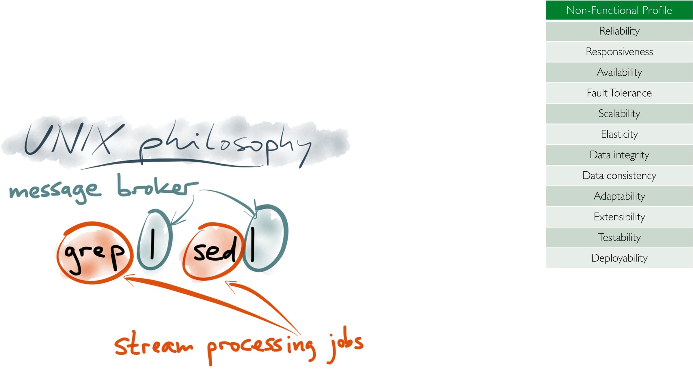
Advanced Software and Systems Engineering | Institute of Computer Science | University of St.Gallen
6Let's Talk NFPs
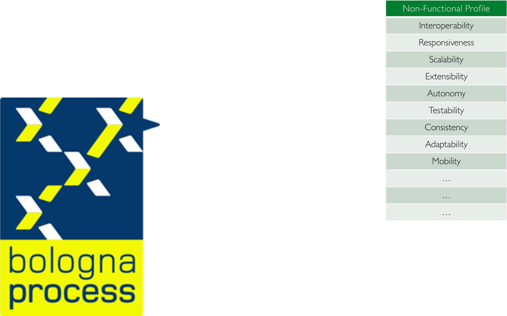
Advanced Software and Systems Engineering | Institute of Computer Science | University of St.Gallen
7Let's Talk NFPs
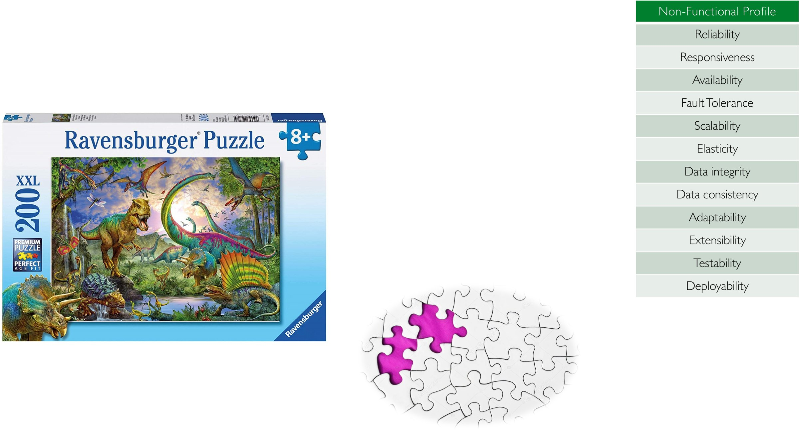
Advanced Software and Systems Engineering | Institute of Computer Science | University of St.Gallen
8Let's Talk NFPs
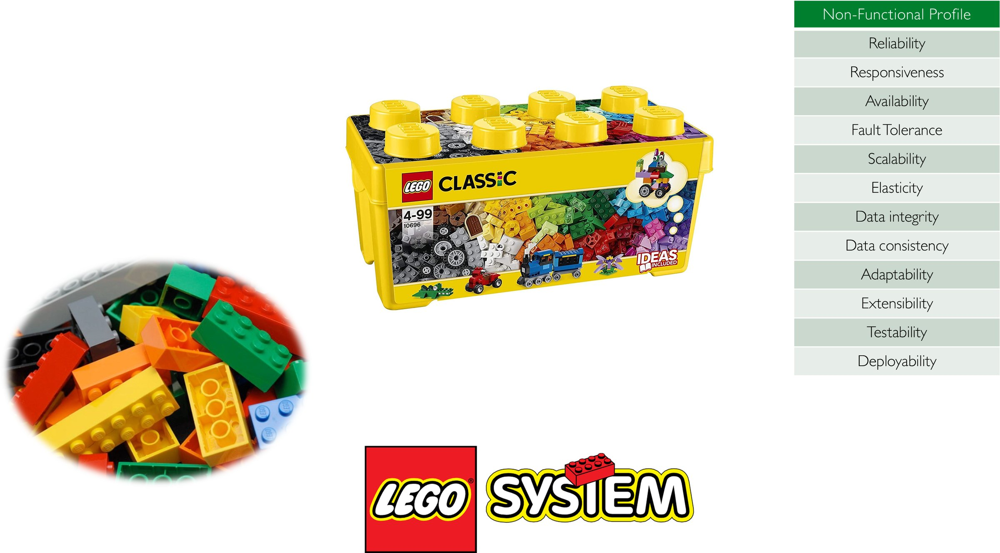
Advanced Software and Systems Engineering | Institute of Computer Science | University of St.Gallen
9Case Study 1: Creative Play
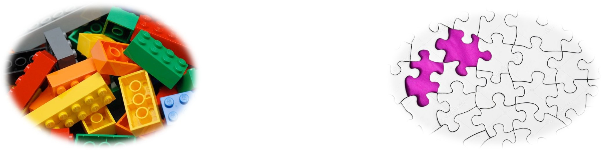
Advanced Software and Systems Engineering | Institute of Computer Science | University of St.Gallen
10Case Study 1: Creative Play
- Ole Christiansen's “Leg godt” (“Play Well”) in 1932
- Godtfred Christiansen's “system for creative play” in 1958
- Derivative of Kiddicraft play system
- Lego was designed with the system in mind
- Main desired (non-functional) characteristics: many recombinations in sturdy designs!
- Problem #1: light but durable materials!
- Hollow bricks are desired
- However, especially the notches need to be resistant to impact and heat
- Solution: injection-molded acrylonitrile butadiene styrene (ABS)
- Problem #2: interlocks need to be sturdier than for previous blocks!
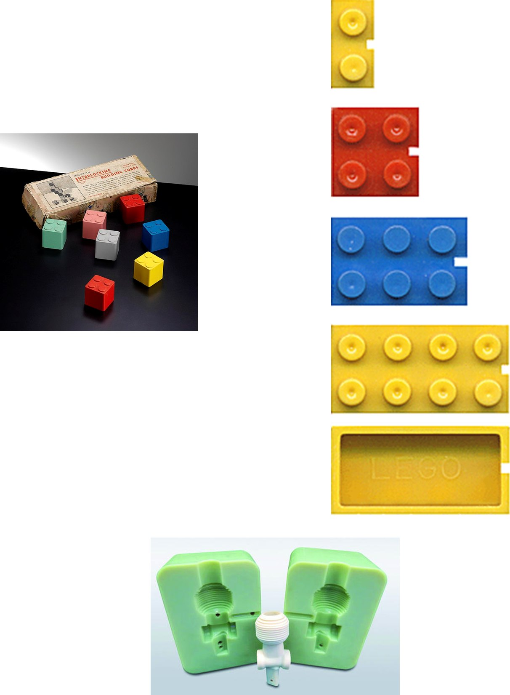
Advanced Software and Systems Engineering | Institute of Computer Science | University of St.Gallen
11Case Study 1: Creative Play
Christiansen's “Automatic Binding Brick” (1958; later: Lego brick). The relevant difference to competitors is on the system level: it is the interfaces!
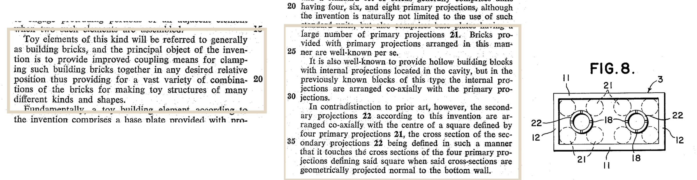
Advanced Software and Systems Engineering | Institute of Computer Science | University of St.Gallen
12Case Study 1: Creative Play
The “Lego System” concept introduced architectural constraints to permit a specific desired non-functional profile: huge network effects
- Reinforced interfaces support durability of designs
- Uniform interfaces enable creative recombinations
- This non-functional profile proved highly successful on the market!
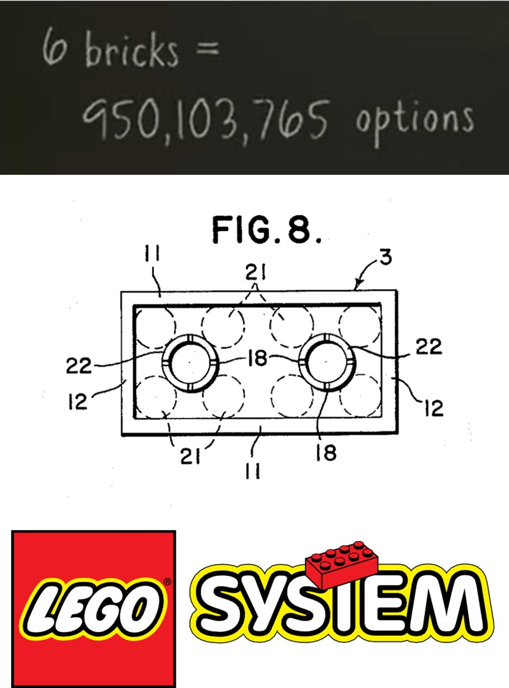
Advanced Software and Systems Engineering | Institute of Computer Science | University of St.Gallen
13Other non-functional profiles are highly competitive as well!
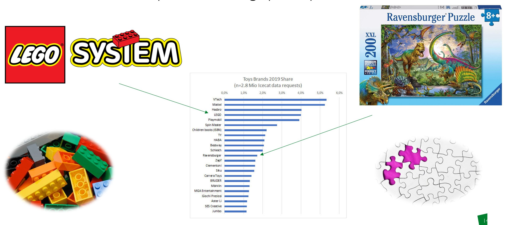
Advanced Software and Systems Engineering | Institute of Computer Science | University of St.Gallen
14Play and Discuss!
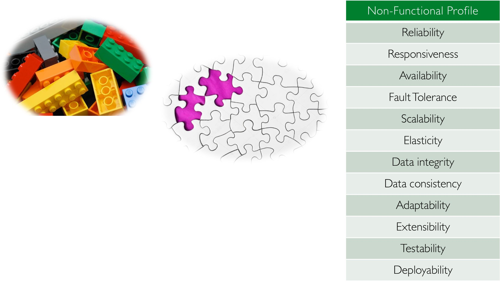
Remember: “Uniform Interface” in CS refers to a principle in the REST architectural style. It means that individual services are accessed uniformly, no matter what the services do. A prominent example are HTTP methods that apply uniformly to any Web resource.
Advanced Software and Systems Engineering | Institute of Computer Science | University of St.Gallen
15Play and Discuss!
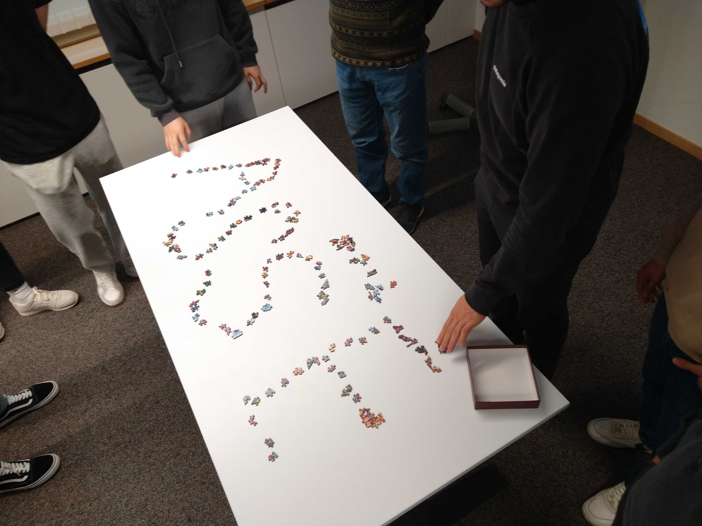
Advanced Software and Systems Engineering | Institute of Computer Science | University of St.Gallen
16Case Study 1: Creative Play
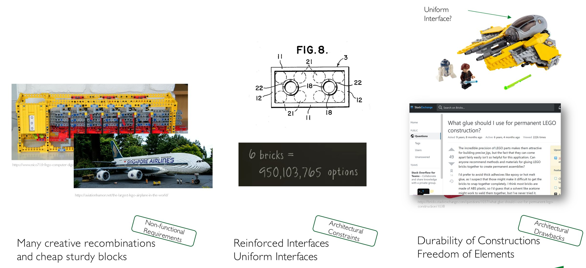
nico71.fr/lego-computer-digicomp, aviationhumor.net, bricks.stackexchange.com
Advanced Software and Systems Engineering | Institute of Computer Science | University of St.Gallen
17Case Study 1: Creative Play
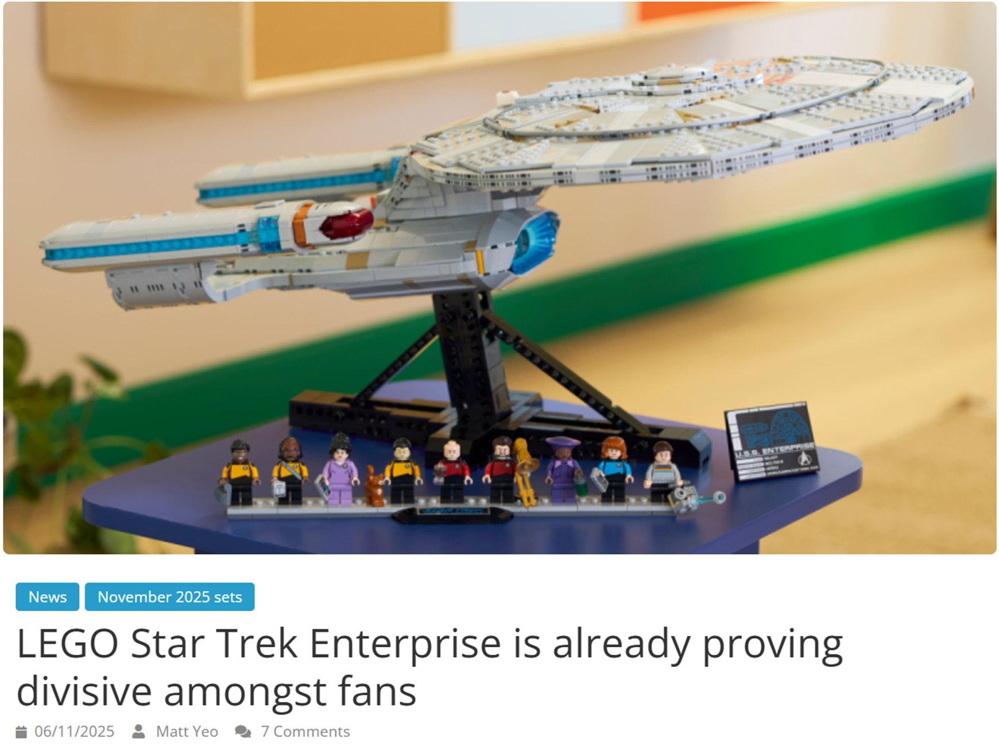
Advanced Software and Systems Engineering | Institute of Computer Science | University of St.Gallen
18Consider a few more examples…
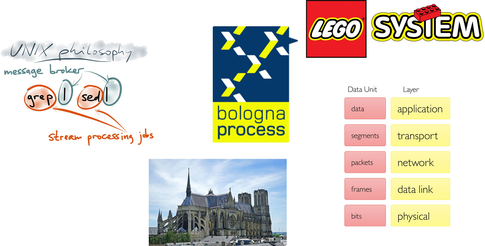
Advanced Software and Systems Engineering | Institute of Computer Science | University of St.Gallen
19Case Study 2: Architecture
Architectural elements (windows, walls, arches) are supplied by different stakeholders (masons, carpenters, window builders).
The elements interact through structural mechanics and structural dynamics.
Structural engineers provide coordinated design constraints that comply with the functional and non-functional requirements.
These coordinated constraints might become a recognized architectural style.
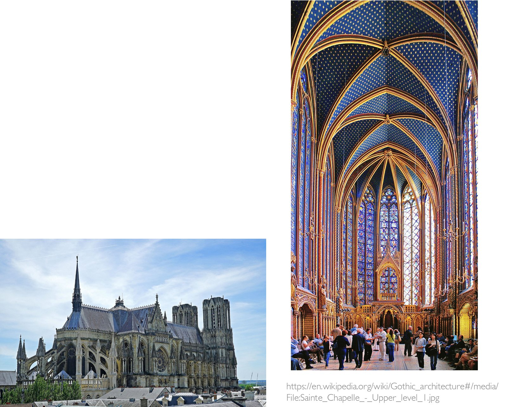
Sainte-Chapelle, upper level, Cathédrale Notre-Dame de Reims
Advanced Software and Systems Engineering | Institute of Computer Science | University of St.Gallen
20Desired Non-Functional Profile
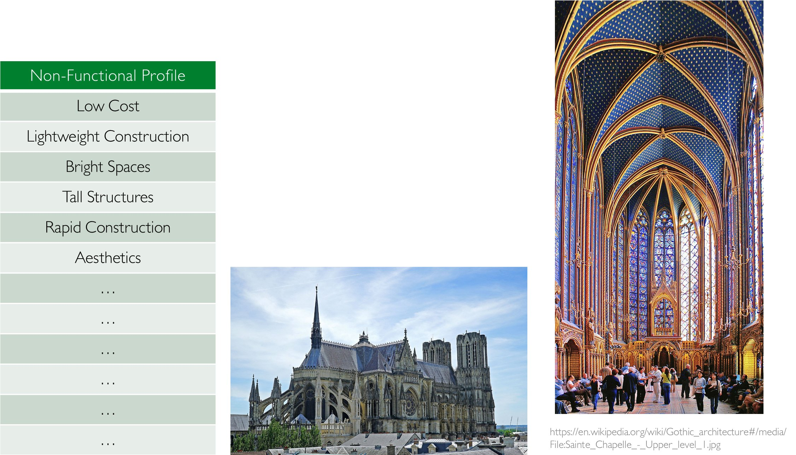
Advanced Software and Systems Engineering | Institute of Computer Science | University of St.Gallen
21Structural Challenges
- Problem #1: fragile materials! Can windows provide enough support to the ceiling?
- Problem #2: concentrated strain! Can the foundation provide enough support for the walls?
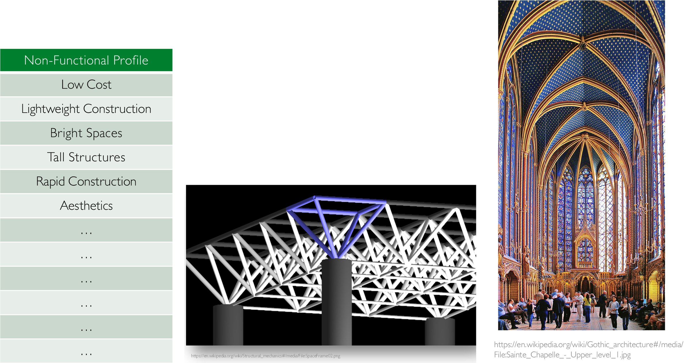
Advanced Software and Systems Engineering | Institute of Computer Science | University of St.Gallen
22Architectural Constraints
Pointed Arches
- Support spaciousness (allow higher ceilings)
- Support illumination (allow larger windows)
- Take horizontal strain off walls
- Take vertical strain from glass (shifted to walls)
Flying Buttresses
- Vertical strain is shifted to walls
- Required to spread weight across larger foundation
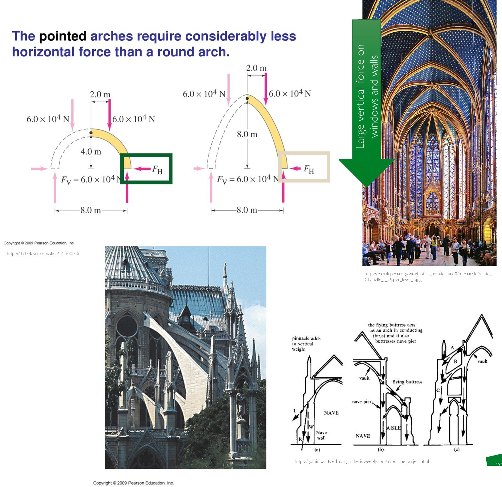
Figures: Pearson Education 2009; gothic-vaults-edinburgh-thesis; slideplayer.com
Advanced Software and Systems Engineering | Institute of Computer Science | University of St.Gallen
23Induced Trade-Offs
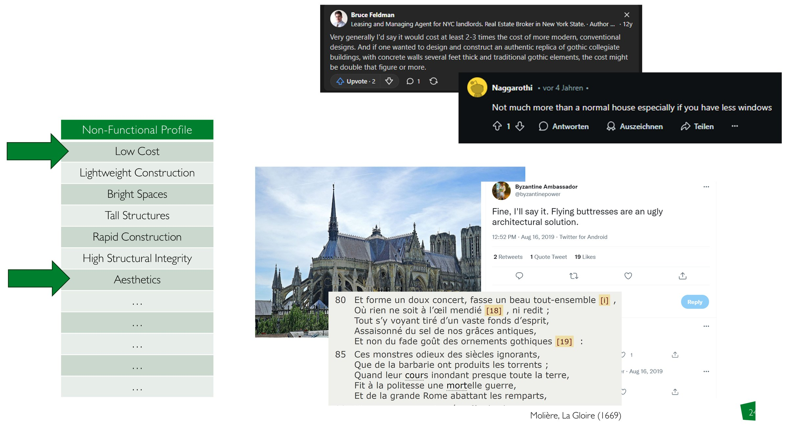
Molière, La Gloire (1669)
Advanced Software and Systems Engineering | Institute of Computer Science | University of St.Gallen
24Case Study 3: The Bologna Process
Induced Architectural Constraints
- Standardized Credits («ECTS»)
- Standardized Cycles and Degrees («Bachelor/Master»)
- Mandatory Acceptance of Degrees from other Institutions
Trade-offs
Heavily constrained autonomy of individual university programs. Low responsiveness to educational developments.
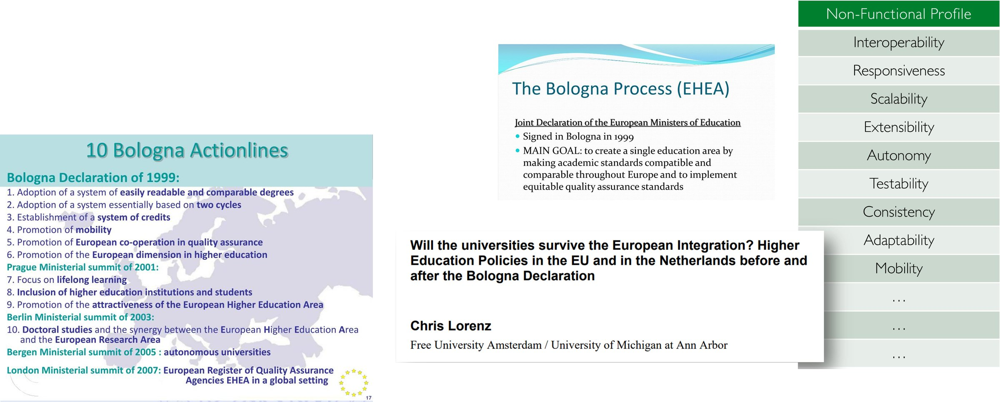
Advanced Software and Systems Engineering | Institute of Computer Science | University of St.Gallen
25Case Study 4: The Unix Philosophy
- Build modular programs, use composition, separate mechanisms from policy
- Write readable, simple, small, transparent and robust programs
- Make data complicated when required, not the program
- Build on potential users' expected knowledge; avoid unnecessary output; write programs which fail in a way that is easy to diagnose
- Value developer time over machine time; write abstract programs that generate code instead of writing code by hand; prototype software before polishing it
- Write flexible and open programs; make the program and protocols extensible
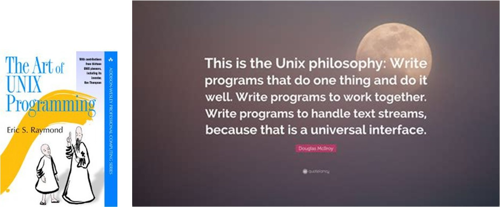
Architecturally: contribution to the toolbox philosophy of Unix
Advanced Software and Systems Engineering | Institute of Computer Science | University of St.Gallen
26Case Study 4: The Unix Philosophy
$ ls -l | grep key | less
process1 | process2 | process3
Induced Architectural Constraints
- Read input from standard input
- Write (main) output to standard output
Trade-offs
Low design freedom of individual elements. Optimization across processes is impossible without sacrificing the uniform interface
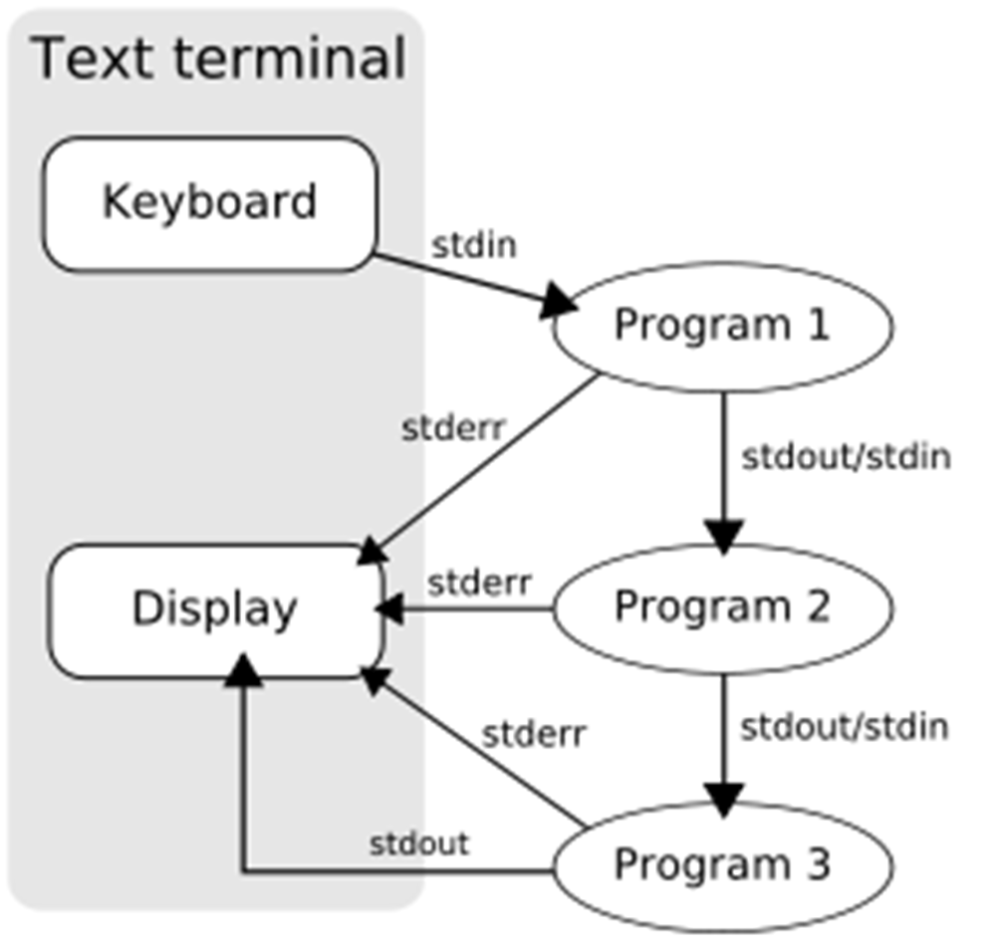
Advanced Software and Systems Engineering | Institute of Computer Science | University of St.Gallen
27Case Study 5: Computer Networking
- Individual layers should be exchangeable / reusable / recombinable
- Applications should not depend on physical carrier medium
- Core intent was to circumvent AT&T's monopoly on telephone cables
Induced Architectural Constraint
- Layered networking stack
- Strict separation of concerns
Trade-offs
Optimization across layers is impossible without sacrificing separation of concerns. Points in case: QUIC, CoAP, BLE!
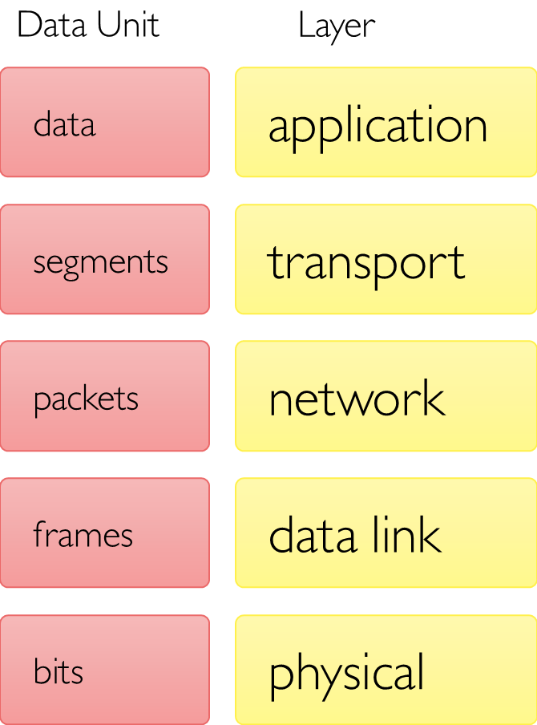
Advanced Software and Systems Engineering | Institute of Computer Science | University of St.Gallen
28No Free Lunch!
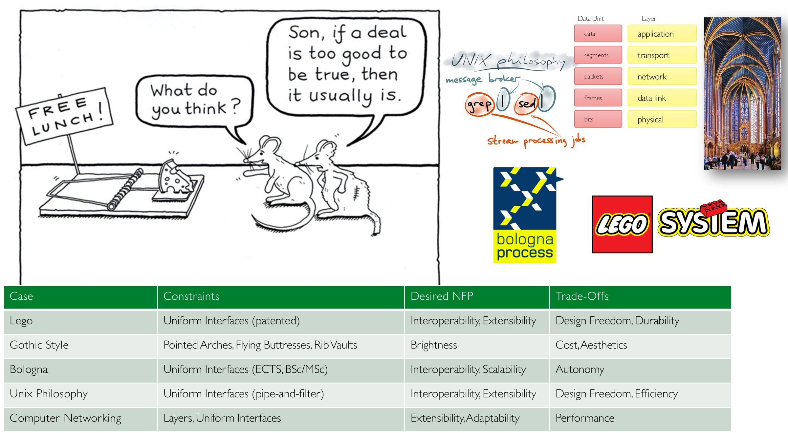
Advanced Software and Systems Engineering | Institute of Computer Science | University of St.Gallen
29No coincidence!
Our examples illustrate that specific architectural constraints are placed consciously to achieve specific non-functional profiles.
| Case | Constraints | Desired NFPs | Trade-Offs |
|---|---|---|---|
| Lego | Uniform Interfaces (patented) | Interoperability, Extensibility | Design Freedom, Durability |
| Gothic Style | Pointed Arches, Flying Buttresses, Rib Vaults | Brightness | Cost, Aesthetics |
| Bologna | Uniform Interfaces (ECTS, BSc/MSc) | Interoperability, Scalability | Autonomy |
| Unix Philosophy | Uniform Interfaces (pipe-and-filter) | Interoperability, Extensibility | Design Freedom, Efficiency |
| Computer Networking | Layers, Uniform Interfaces | Extensibility, Adaptability | Performance |
When you design a computer system, we want you to do the same: consciously select fitting architectural constraints to achieve the non-functional profile you desire
Advanced Software and Systems Engineering | Institute of Computer Science | University of St.Gallen
30No coincidence! Let's look at one of the most interoperable technical systems we know today…
…which is, at the same time, the most prominent information system globally.
Select Seven Characteristics!
A globally connected research association is, each year, welcoming thousands of researchers who bring their diverse data and results in diverse formats and on diverse computer systems. The researchers need to be enabled to integrate these results and we don't know which formats will come next.
- Users: tens of thousands of researchers world-wide
- Requirements: see above!
- Context:
- Diverse computer systems with heterogeneous data formats
- Open-ended fundamental research projects
[ ] deployability [ ] performance [ ] adaptability [ ] maintainability [ ] scalability [ ] elasticity [ ] learnability [ ] extensibility [ ] fault tolerance [ ] responsiveness [ ] recoverability [ ] interoperability [ ] availability [ ] data integrity [ ] workflow [ ] testability [ ] reliability [ ] cost
Advanced Software and Systems Engineering | Institute of Computer Science | University of St.Gallen
32Select Seven Characteristics!
A globally connected research association is, each year, welcoming thousands of researchers who bring their diverse data and results in diverse formats and on diverse computer systems. The researchers need to be enabled to integrate these results and we don't know which formats will come next.
[x] deployability [ ] performance [x] adaptability [ ] maintainability [x] scalability [ ] elasticity [x] learnability [x] extensibility [x] fault tolerance [ ] responsiveness [ ] recoverability [x] interoperability [ ] availability [ ] data integrity [ ] workflow [ ] testability [ ] reliability [ ] cost
Advanced Software and Systems Engineering | Institute of Computer Science | University of St.Gallen
33What is the Web?
An Internet-scale Distributed Hypermedia System!
“constantly running, always changing, anarchically accessed, and independently deployed”, “readily usable by anyone” (R. Fielding)
- Scalability
- Internet-scale
- Fault Tolerance
- “constantly running”
- Adaptability & Extensibility
- “always changing”
- Interoperability & Deployability
- “anarchically accessed, and independently deployed”
- Learnability
- “readily usable by anyone”
Roy T. Fielding, Rohit Khare, Richard Taylor. FSE'17 Keynote: youtube.com/watch?v=6oFAmQUM8ws
Advanced Software and Systems Engineering | Institute of Computer Science | University of St.Gallen
34The World Wide Web's NFPs
At CERN, Tim Berners-Lee's intention is to create an information management system that would improve the management of scientific data about CERN's accelerators and experiments, especially given CERN's complex evolving systems.
He is aware of the work of the Hypertext community that is researching the management of non-linear information and submits a proposal for an information management system at CERN to his boss, M. Sendall.
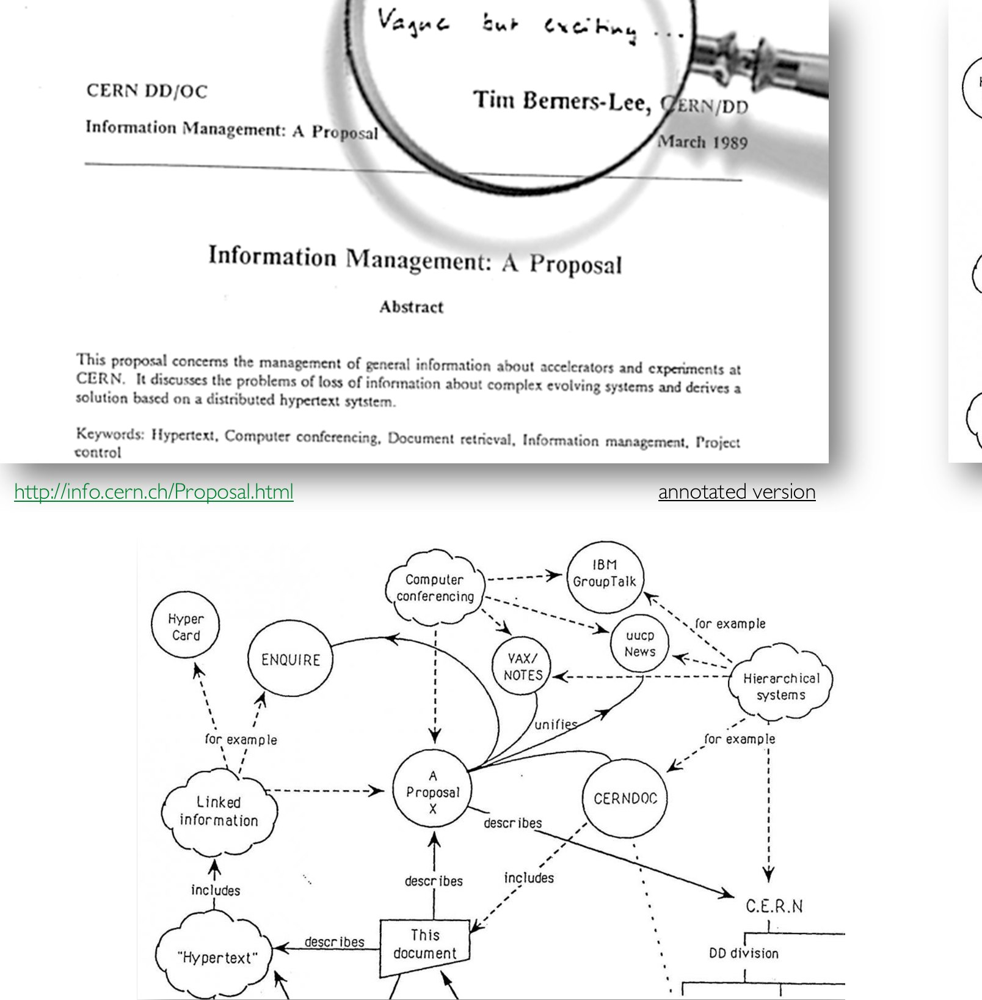
info.cern.ch/Proposal.html, annotated version
Advanced Software and Systems Engineering | Institute of Computer Science | University of St.Gallen
35Mike SendallA World Wide Wild Success
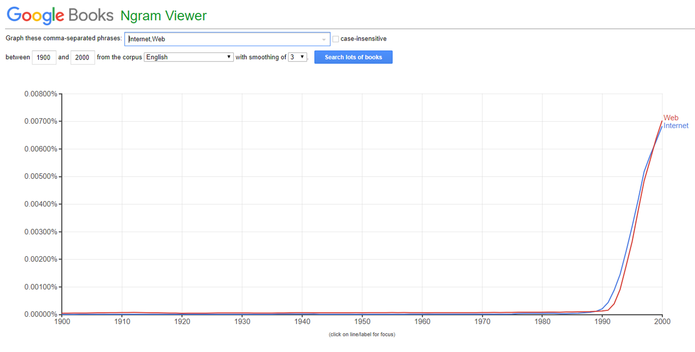
Advanced Software and Systems Engineering | Institute of Computer Science | University of St.Gallen
36Coincidence?
Advanced Software and Systems Engineering | Institute of Computer Science | University of St.Gallen
37The World Wide Web's NFPs
Berners-Lee defines the terms URI (then UDI), HTTP, and HTML, and develops the first components and tools for the Web (browser, editor, server, line-mode browser) in 1990.
Tim Berners-Lee submits a paper on the World Wide Web to the Hypertext '91 Conference.
The paper is rejected as an oral presentation and only accepted as a poster contribution.
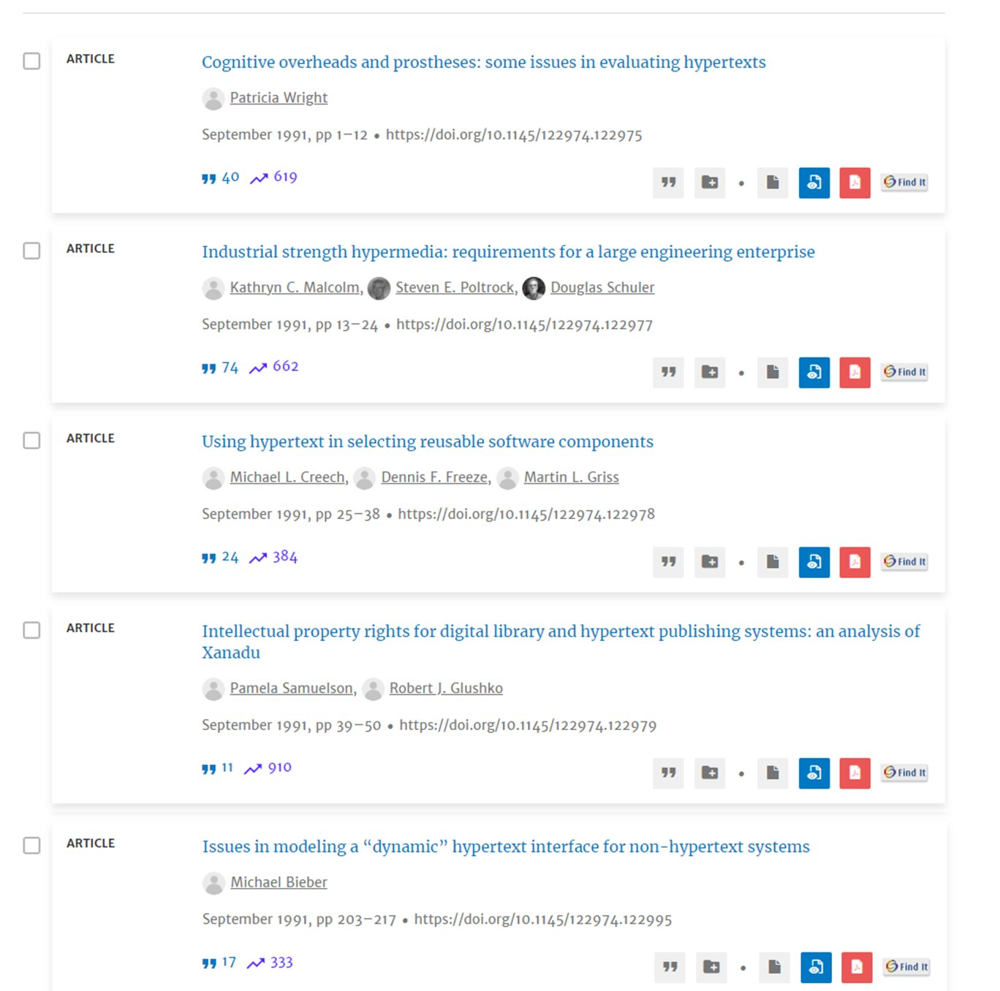
dl.acm.org/doi/proceedings/10.1145/122974, w3.org/2004/Talks/w3c10-HowItAllStarted
Advanced Software and Systems Engineering | Institute of Computer Science | University of St.Gallen
38Mike SendallIt's again about Trade-offs!
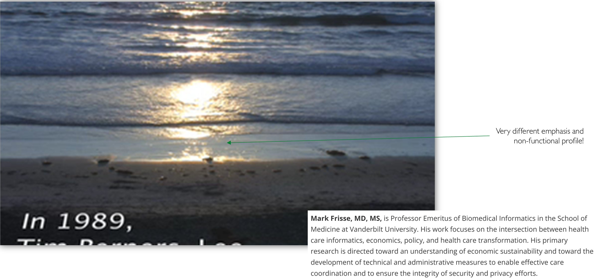
Advanced Software and Systems Engineering | Institute of Computer Science | University of St.Gallen
39In the PowerPoint version, this slide plays a video (a message by Mark Frisse to Tim Berners-Lee); the picture is a still from it.It's again about Trade-offs!
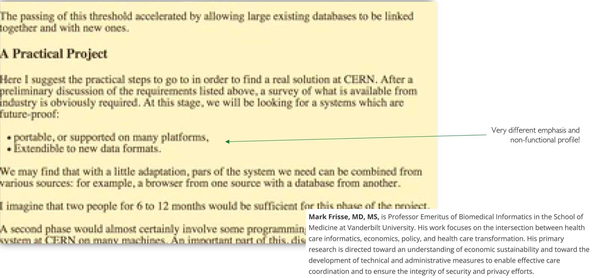
Advanced Software and Systems Engineering | Institute of Computer Science | University of St.Gallen
40It's again about Trade-offs!
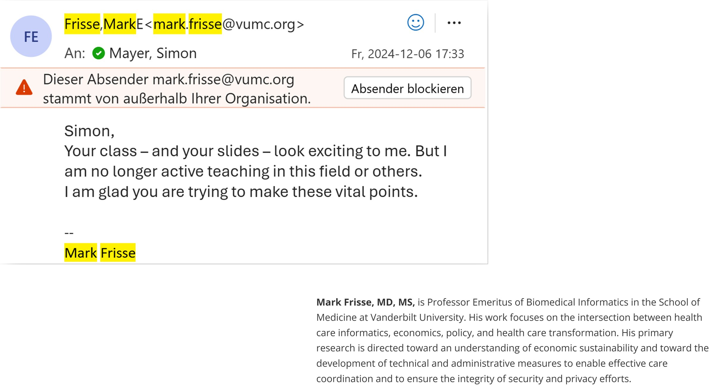
Advanced Software and Systems Engineering | Institute of Computer Science | University of St.Gallen
41It's again about Trade-offs!
Emphasis: Adaptability, Scalability, Extensibility, Interoperability
“Individual links are allowed to break so the entire Web does not.” (T. Berners-Lee)
Emphasis: Recoverability, Availability, Reliability, Integrity
“I was part of the camp who really believed that hypertext systems had to be closed systems with bi-directional links.” (M. Frisse)
“Today's popular software simulates paper. The World Wide Web (another imitation of paper) trivialises our original hypertext model with one-way ever-breaking links and no management of version or contents.” (Project Xanadu)
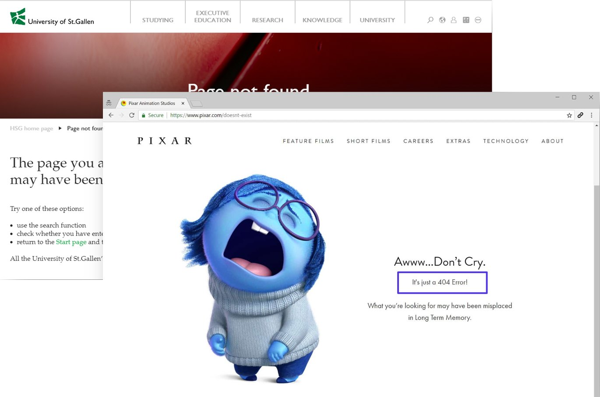
Advanced Software and Systems Engineering | Institute of Computer Science | University of St.Gallen
42It's again about Trade-offs!
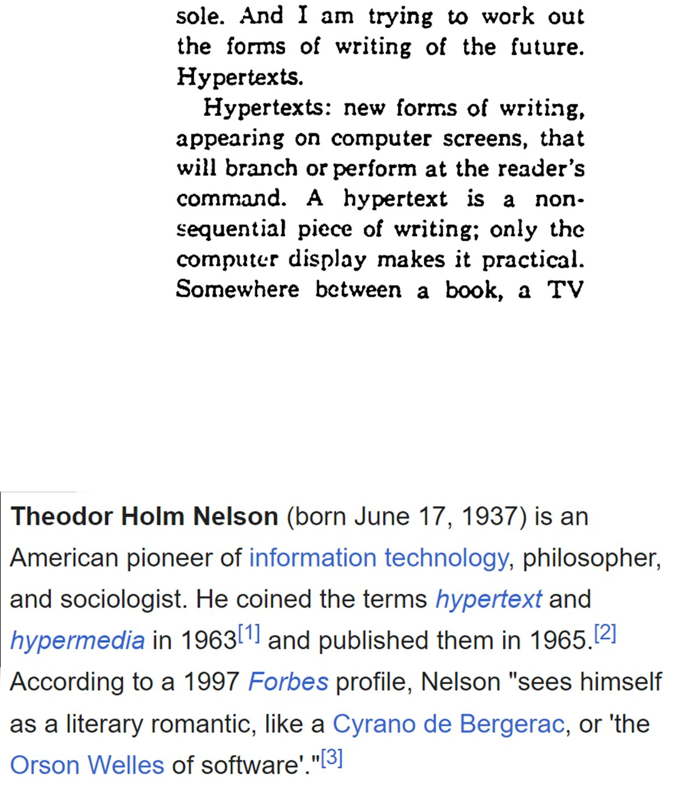
Advanced Software and Systems Engineering | Institute of Computer Science | University of St.Gallen
43In the PowerPoint version, this slide also plays a video (07-ASSE-PrincipledDesign-Xanadu).Project Xanadu
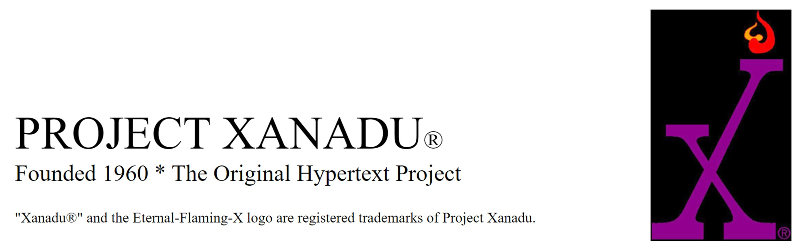
Advanced Software and Systems Engineering | Institute of Computer Science | University of St.Gallen
44Project Xanadu
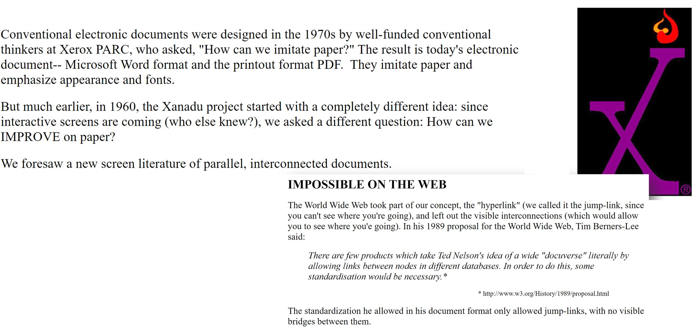
Advanced Software and Systems Engineering | Institute of Computer Science | University of St.Gallen
45Transclusion
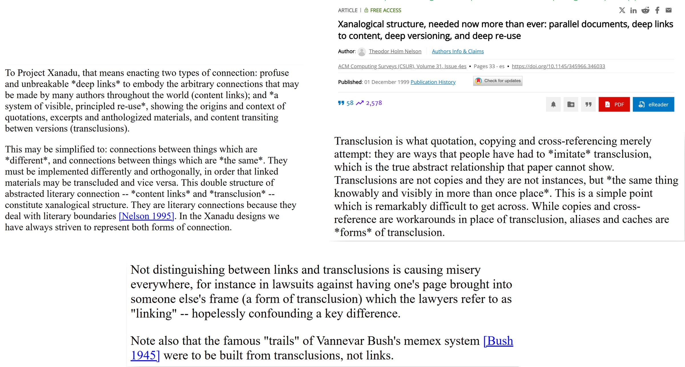
Xanalogical structure, needed now more than ever: parallel documents, deep links to content, deep versioning, and deep re-use. ACM Computing Surveys 31(4), 1999
Advanced Software and Systems Engineering | Institute of Computer Science | University of St.Gallen
46Project Xanadu
This issue was highly debated in the run-up to the EU Copyright Directive as recently as 2016!
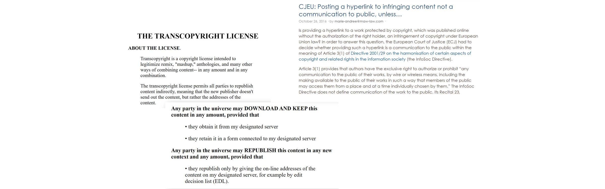
Advanced Software and Systems Engineering | Institute of Computer Science | University of St.Gallen
47Which is better: Xanadu or the Web?
- We cannot say! What is “better” depends on the targeted non-functional requirements
- Historically, the Web's model has succeeded
- But that's a one-sided experiment, and history is not over
In honor of Ted Nelson, computer pioneers connect at 'Intertwingled', Chapman Newsroom
Advanced Software and Systems Engineering | Institute of Computer Science | University of St.Gallen
48Non-functional Profile of the World Wide Web
What we can today say: the Web's Architecture is doing (very) well with some NFPs and (very) poorly with others
| Case | Desired NFPs | Trade-Offs |
|---|---|---|
| Lego | Interoperability, Extensibility | Design Freedom, Durability |
| Gothic Style | Brightness | Cost, Aesthetics |
| Bologna | Interoperability, Scalability | Autonomy |
| Unix Philosophy | Interoperability, Extensibility | Design Freedom, Efficiency |
| Computer Networking | Extensibility, Adaptability | Performance |
| Flexible and Open World-Wide Information System | Scalability, Adaptability, Evolvability, Extensibility, Interoperability | Performance, Responsiveness, Data Integrity, Reliability |
Davis 1989; Gefen and Keil 1998; Guinard, Ion, Mayer 2011 (REST or WS-*?); Popa, Wendell, Ghodsi, Stoica 2012 (HTTP: An Evolvable Narrow Waist)
Advanced Software and Systems Engineering | Institute of Computer Science | University of St.Gallen
49The six cases are the five case studies of today plus the Web; the last row is the profile we want to reach.How would you construct a world-wide flexible and open information system?
Let's naturally derive the Web's core architectural constraints to get this profile:
- Scalability (in the sense of a global system)
- Evolvability (in the sense of decoupling between components)
- Extensibility / Openness / Interoperability (in the sense of heterogeneous service offerings and heterogeneous services partaking)
We are of course talking about the REST architectural style here. If you know the REST constraints already, use this as an opportunity to give them a fresh look and to bring them together from an architectural viewpoint.
Advanced Software and Systems Engineering | Institute of Computer Science | University of St.Gallen
50Origin Clients and Origin Servers
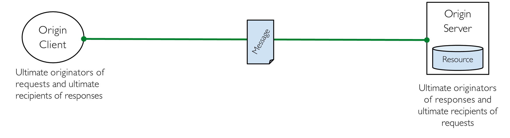
Advanced Software and Systems Engineering | Institute of Computer Science | University of St.Gallen
51Representational State Transfer
REST is the idealized architectural style of the Web. This does not mean “REST = Web”!
A coordinated set of six architectural constraints: three are explicit in the original Web Architecture, three are explicit in the Modern Web Architecture.
This concrete set of architectural constraints for distributed hypermedia systems is called Representational State Transfer, or REST.
We refer to a system as “REST” if it satisfies all these constraints
Required reading: Fielding's dissertation, at least chapters 4 & 5, recommended everything.
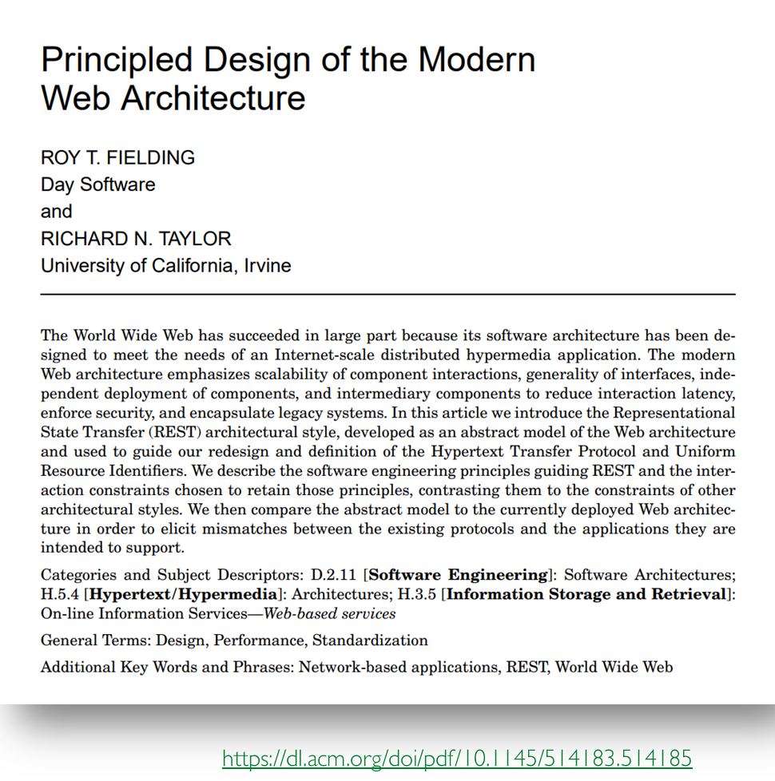
Fielding, 2000; Fielding and Taylor, 2002
Advanced Software and Systems Engineering | Institute of Computer Science | University of St.Gallen
52Representational State Transfer
“At the beginning of our efforts within the Internet Engineering Task Force (…) we recognized the need for a model of how the World Wide Web should work. This idealized model of the interactions within an overall Web application, what we refer to as the Representational State Transfer (REST) architectural style, became the foundation for the modern Web architecture, providing the guiding principles by which flaws in the existing architecture could be identified and extensions validated prior to deployment.”
R.T. Fielding and R.N. Taylor, 2002
Fielding, 2000; Fielding and Taylor, 2002
Advanced Software and Systems Engineering | Institute of Computer Science | University of St.Gallen
53Representational State Transfer
“Even if it were possible to build a software system that perfectly matches the requirements of its users, those requirements will change over time just as society changes over time. A long-lived system like the Web must be prepared for (…) gradual and fragmented change, where old and new implementations co-exist without preventing the new implementations from making use of their extended capabilities. (…) The introduction of each new goal presents us with a challenge: how do we introduce a new set of functionality to an architecture that is already widely deployed, and how do we ensure that its introduction does not adversely impact, or even destroy, the architectural properties that have enabled the Web to succeed? It was this question that motivated our development of the REST architectural style.”
R.T. Fielding and R.N. Taylor, 2002
Fielding, 2000; Fielding and Taylor, 2002
Advanced Software and Systems Engineering | Institute of Computer Science | University of St.Gallen
54Architectural Constraints on the Modern Web Architecture
Similar to how Lego restricts interfaces and the Bologna Reform restricts study programs, Representational State Transfer (REST) restricts how components may process requests and send responses.
- Six architectural constraints to gain desirable non-functional properties
- Three of these were part of the pre-1994 Web architecture
- Three were added to guide the design of the modern Web architecture
- Together, they continue to make the Web an Internet-scale, open, and long-lived system
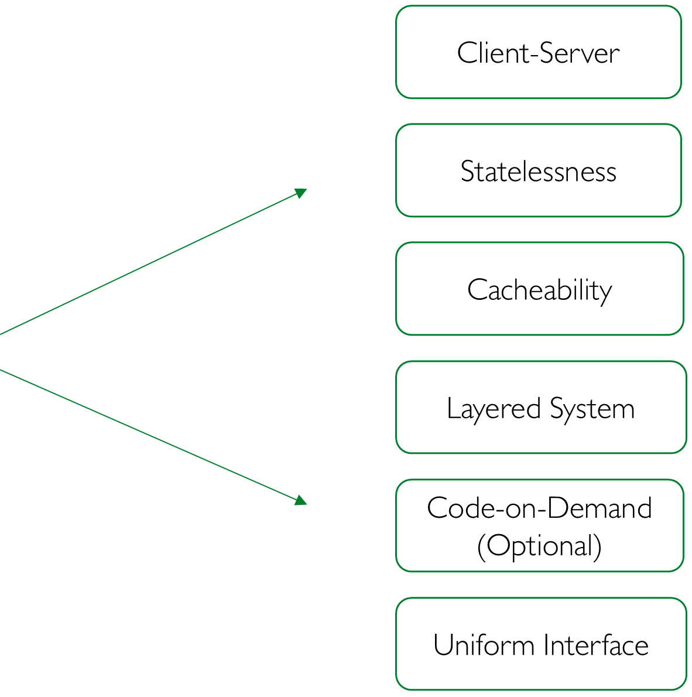
Fielding, 2000; Fielding and Taylor, 2002
Advanced Software and Systems Engineering | Institute of Computer Science | University of St.Gallen
55Components of the Web Architecture
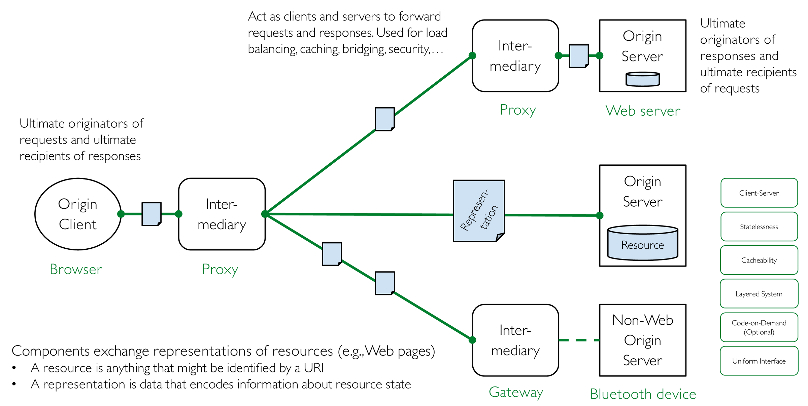
Slide based on A. Ciortea, 2020. W3C Recommendation, Architecture of the World Wide Web, Volume One. Matthias Kovatsch: The Web-based Application-layer Protocol for the IoT. IoTSC 2014
Advanced Software and Systems Engineering | Institute of Computer Science | University of St.Gallen
56The Constraints in the Web Architecture
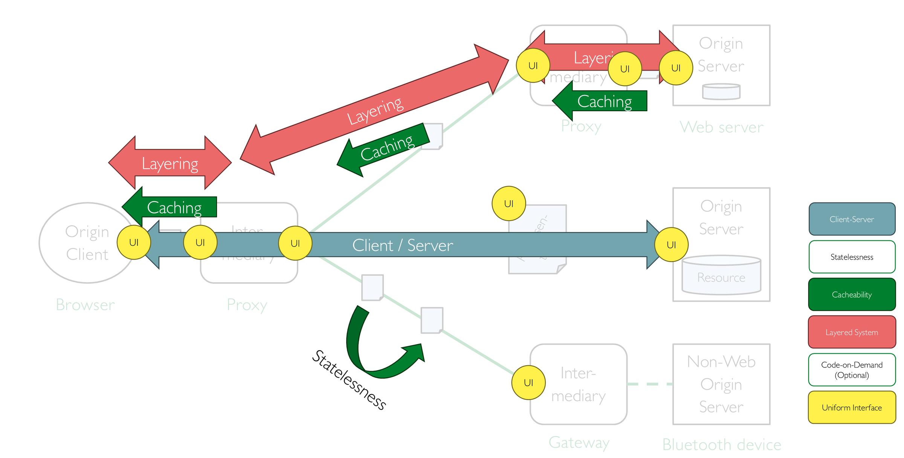
Advanced Software and Systems Engineering | Institute of Computer Science | University of St.Gallen
57Client-Server: Three High-level Options
Traditional Client/Server Style
- Render data where it rests
- Move rendered result to client in fixed format
- Great simplification of clients!
- Server-side scalability problems (large load on server)
Mobile Object Style
- Encapsulate data with rendering engine; move both to the recipient
- Great information hiding! Data format does not matter
- Limits functionality to what is foreseen in the engine; transmits a lot of data
Prenegotiated Types Style
- Send raw data to recipient together with metadata that describes it
- Remains scalable (load sharing between client and server)
- Loses information hiding; requires prenegotiated data types
Advanced Software and Systems Engineering | Institute of Computer Science | University of St.Gallen
58Source: Fielding, 2000; Fielding and Taylor, 2002Client-Server
REST Client-Server: Hybrid Style
- Shared understanding of data types with metadata but limited to a standardized interface
- Approximation of Mobile Object Style: interaction by transferring representations according to an evolving set of dynamically selected standard data types
- Gains separation of concerns (e.g., UI vs. Data Storage) between clients (that send requests) and servers (that receive requests and may send responses)
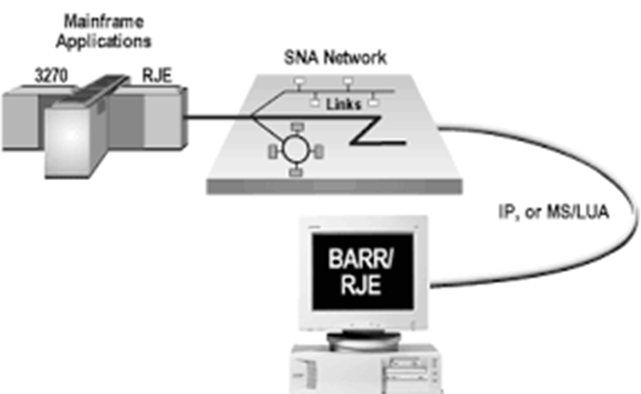
Advanced Software and Systems Engineering | Institute of Computer Science | University of St.Gallen
59Source: Fielding, 2000; Fielding and Taylor, 2002Client-Server
Non-functional benefits
- evolvability (independent evolution of components through SoC)
- scalability (on the server side)
- portability (of user interfaces: same user interface across platforms)
Non-functional drawbacks
- performance (cannot optimize across client and server)
- responsiveness (cannot optimize across client and server)
- behavioral consistency (different clients may behave differently)
Advanced Software and Systems Engineering | Institute of Computer Science | University of St.Gallen
60Source: Fielding, 2000; Fielding and Taylor, 2002Stateless Interactions
Each client-server interaction is self-contained and stands alone
State is kept in resources and in the client, but not in the interaction
Resource state is managed on the server
- It is the same for every client working with the resource
- When a client modifies the resource state, other clients see this change as well
- The server does not remember the requesting client (no session) nor previous requests (no history)
Application state is managed on the client
- It is specific for a client and thus has to be maintained by each client
- On the Web, this is the purpose of “Cookies”
Fielding, 2000; Fielding and Taylor, 2002
Advanced Software and Systems Engineering | Institute of Computer Science | University of St.Gallen
61Stateless Interactions
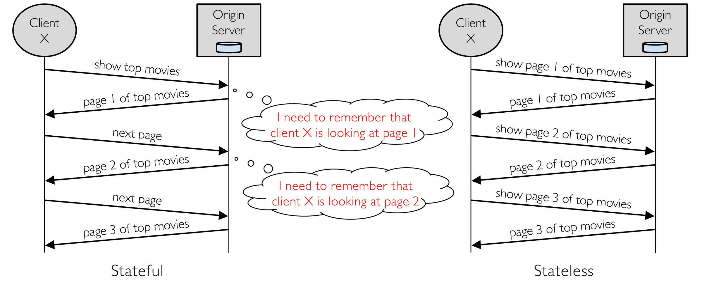
Advanced Software and Systems Engineering | Institute of Computer Science | University of St.Gallen
62Stateless Interactions
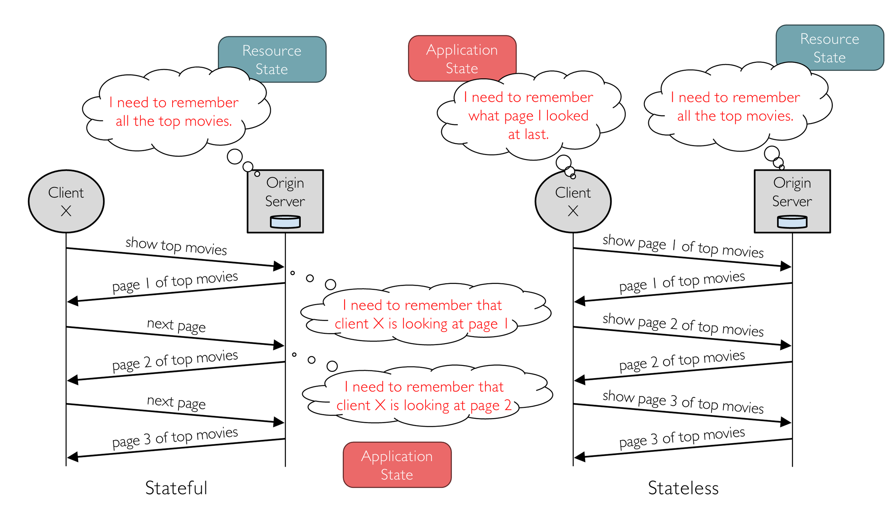
Advanced Software and Systems Engineering | Institute of Computer Science | University of St.Gallen
63Stateless Interactions
Non-functional benefits
- reliability (easier to recover interaction from partial failures)
- scalability (takes load off servers, no management of interactions)
- visibility (easy monitoring)
- load balancing
Non-functional drawbacks
- performance (repeated transmission of the same data)
- responsiveness (more complex internal server logic)
- consistency (less server control over consistent application behavior)
Practically
- One origin server can easily serve many clients
- Intermediaries can reliably interpret requests
- Requests can more easily be distributed across different origin servers (load balancing)
Fielding, 2000; Fielding and Taylor, 2002
Advanced Software and Systems Engineering | Institute of Computer Science | University of St.Gallen
64Cacheability
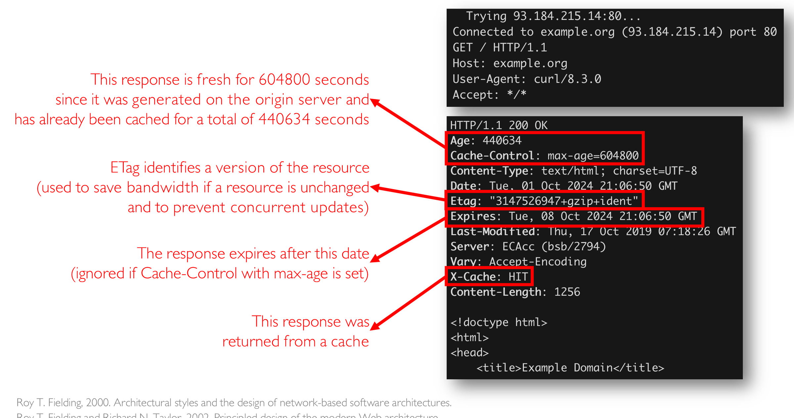
Fielding, 2000; Fielding and Taylor, 2002
Advanced Software and Systems Engineering | Institute of Computer Science | University of St.Gallen
65Cacheability
Servers must indicate whether their responses may be cached.
Non-functional benefits
- performance (on the network: eliminates interactions)
- responsiveness (as perceived by the user: eliminates interactions or pre-fetches information)
- scalability (reduced load on server)
Non-functional drawbacks
- reliability (stale data)
Fielding, 2000; Fielding and Taylor, 2002
Advanced Software and Systems Engineering | Institute of Computer Science | University of St.Gallen
66The Early Web Architecture (before 1994)
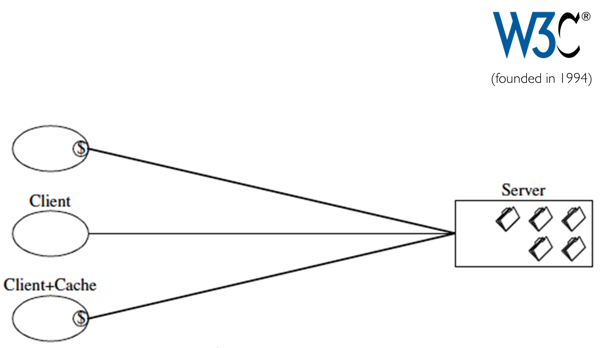
Fielding, 2000; Fielding and Taylor, 2002
Advanced Software and Systems Engineering | Institute of Computer Science | University of St.Gallen
67Layered System
Further constrains client-server by restricting visibility to a single component layer
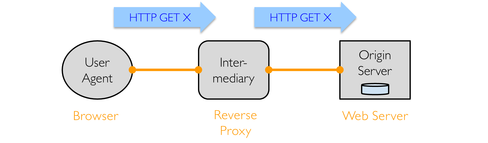
Fielding, 2000; Fielding and Taylor, 2002
Advanced Software and Systems Engineering | Institute of Computer Science | University of St.Gallen
68Layered System
Further constrains client-server by restricting visibility to a single component layer
Fielding, 2000; Fielding and Taylor, 2002
Advanced Software and Systems Engineering | Institute of Computer Science | University of St.Gallen
69Layered System
Further constrains client-server by restricting visibility to a single component layer. Components are oblivious of whether they communicate with origin servers/clients or with intermediaries
Non-functional benefits
- scalability (scope restriction for components / information hiding)
Non-functional drawbacks
- performance (user-perceived as well as network overhead due to many indirections / marshalling)
Flight of the Starlings: Watch This Eerie but Beautiful Phenomenon
Fielding, 2000; Fielding and Taylor, 2002
Advanced Software and Systems Engineering | Institute of Computer Science | University of St.Gallen
70Code-on-Demand (Optional)
Component functionality can be extended by moving and executing code (e.g., scripts).
Non-functional benefits
- extensibility (client behavior can be enriched at run time)
Non-functional drawbacks
- maintainability (through reduced visibility)
- security (client needs to execute ad-hoc received code)
Fielding, 2000; Fielding and Taylor, 2002
Advanced Software and Systems Engineering | Institute of Computer Science | University of St.Gallen
71Uniform Interface
Component implementations are heterogeneous (different frameworks, data models, formats, etc.). How can they interact in a uniform manner?
Components interact through a general, uniform interface that hides away their implementation details!
Analog: interaction via a shared language (often: EN)
- Individuals can now interact and understand one another (“interoperability”)
- However, the “uniform interface” is a compromise
- Might be a reduced interface (i.e., loss of expressivity)
- Might be an inefficient interface (e.g., for non-native English speakers)
Advanced Software and Systems Engineering | Institute of Computer Science | University of St.Gallen
72Uniform Interface
Components interact through a general, uniform interface that hides away their implementation details! Extension on top of Layered System to reduce coupling between components.
- The same (small) set of verbs (i.e., operations) applies to every noun (i.e., resource)
- Verbs and their semantics are universal and are not invented per-application
- New verbs rarely enter language; new nouns regularly do
- The same pattern is true for the “English” uniform interface, see Oxford's New Word Entries
- For protocols that follow the REST architectural style…
- …noun semantics are defined by media types (e.g., application/json for JSON)
- …verb semantics are defined in the protocols (e.g., in HTTP)
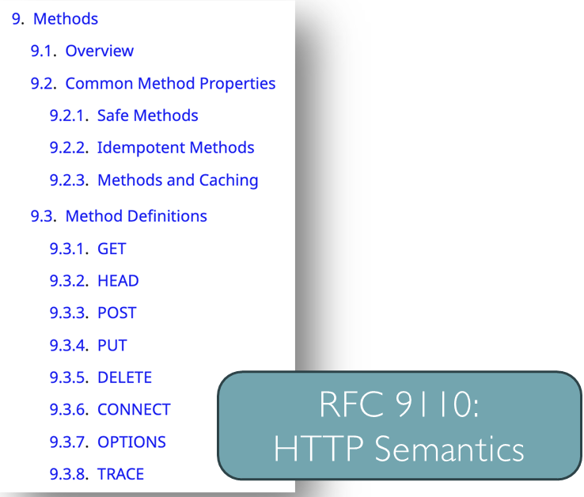
Advanced Software and Systems Engineering | Institute of Computer Science | University of St.Gallen
73HTTP's Uniform Interface
- GET
- retrieves the representation of a resource
- HEAD
- identical to GET but server must not send content
- OPTIONS
- request information about communication options of resource
- PUT
- replaces the state of a resource with the one enclosed in the body of the request
- PATCH
- (added through RFC 5789) apply specified changes to resource
- DELETE
- removes the target resource
- POST
- wildcard method, typically used for creating or updating a resource
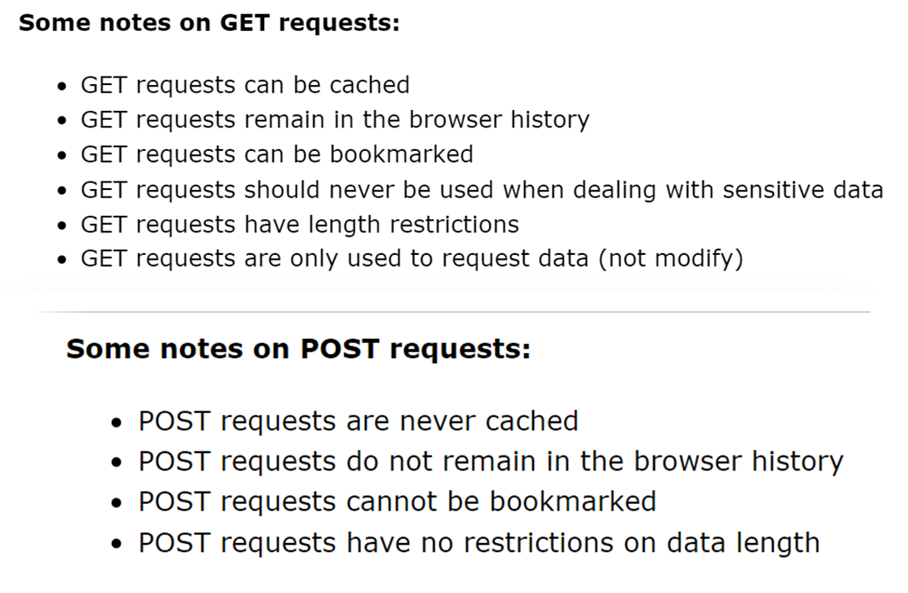
GET, HEAD: safe, idempotent, cacheable · PUT, DELETE: idempotent · POST: neither safe nor idempotent
Advanced Software and Systems Engineering | Institute of Computer Science | University of St.Gallen
74Uniform Interface Trade-Offs
Non-functional benefits
- evolvability / extensibility / interoperability (permits independent evolution of components)
- maintainability / visibility (easier to monitor interactions)
- simplicity
Non-functional drawbacks
- performance (general uniform interface is not optimized for specific applications)
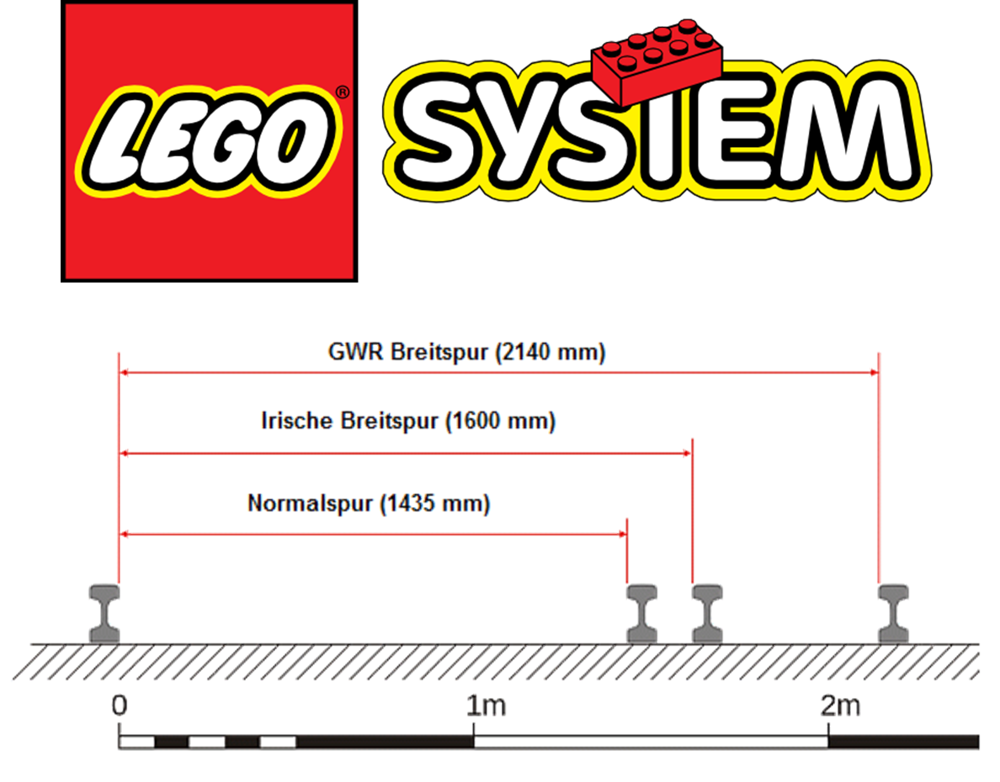
Fielding, 2000; Fielding and Taylor, 2002
Advanced Software and Systems Engineering | Institute of Computer Science | University of St.Gallen
75What aspects are “uniform”?
The interface itself: there is only a small set of general methods (e.g., GET, POST, etc.) that apply to any resource. The transmitted representations: their semantics are defined using media types.
Advanced Software and Systems Engineering | Institute of Computer Science | University of St.Gallen
76REST's 4 Uniform Interface Constraints
1. Resources must have uniform identifiers that are uniquely addressable using a universal syntax
2. There is no direct access to resources. Rather, components exchange representations of resources and manipulate resources via representations.
3. Messages must be self-descriptive. They need to include metadata that describes their meaning.
4. The state of the client-server application is guided by server-provided hyperlinks.
Fielding, 2000; Fielding and Taylor, 2002
Advanced Software and Systems Engineering | Institute of Computer Science | University of St.Gallen
77(1/4) Uniform Identification
- Name everything you want to talk about in your application. Those are resources.
- Products in an online shop, customers that are expected to buy products, shopping carts where customers collect products
- Next links on multi-page submission processes or paged results
- Robots in a laboratory: api.interactions.ics.unisg.ch/cherrybot
- The standard RFC 3986 “URI” defines the term “resource” as anything that might be referred to by a URI.
- Abstract concepts can also be resources
- Non-network-retrievable artifacts can also be resources: github.com/smnmyr#me
- Resources have uniform identifiers that are uniquely addressable using a universal syntax
- They should mean the same anywhere (think load balancing, but also intranets or DNS spoofing)
Fielding, 2000; Fielding and Taylor, 2002
Advanced Software and Systems Engineering | Institute of Computer Science | University of St.Gallen
78(2/4) Manipulation via Representations
Resources are abstract entities and cannot be used per se
Interaction with resources happens via resource representations
- Clients don't have access to resources but exchange representations with servers
- It is communicated which kind of representation is used: content negotiation establishes a contract
- Representation formats can be negotiated between peers
When you access a Web resource, you see one of its representations
- Your browser negotiates for you! (HTML, locale/language, context attributes)
- If a machine accesses a Web resource instead of a person, it will (should!) see a different representation
Fielding, 2000; Fielding and Taylor, 2002
Advanced Software and Systems Engineering | Institute of Computer Science | University of St.Gallen
79(3/4) Self-descriptive Messages
A message (e.g., HTTP request, CoAP response) must include metadata that describes its meaning; this includes standard verbs and media types
Clients, Servers, and Intermediaries can interpret messages (e.g., to help the Web scale up)
Fielding, 2000; Fielding and Taylor, 2002
Advanced Software and Systems Engineering | Institute of Computer Science | University of St.Gallen
80(4/4) Guidance through Server-Provided Hyperlinks
In REST, servers give local guidance to clients through hyperlinks. Hyperlinks are possible state transitions of the client/server application
Clients don't “call services”, they “navigate application states”
- In REST, clients discover hyperlinks at run time!
- Representations contain information about possible traversals
- The application navigates to the next resource depending on link semantics
- Navigation can be delegated since interactions are uniform :-)
Fielding, 2000; Fielding and Taylor, 2002
Advanced Software and Systems Engineering | Institute of Computer Science | University of St.Gallen
81(4/4) Guidance through Server-Provided Hyperlinks
This “simple” mechanism renders the Web robust and flexible
- This is why Web browsers are general-purpose tools and not hard-coded to specific applications!
- This enables clients to automatically adapt when hyperlinks change! They don't even notice!
Fielding, 2000; Fielding and Taylor, 2002
Advanced Software and Systems Engineering | Institute of Computer Science | University of St.Gallen
82Summary: Evaluating “Styles”
dev.to/techschoolguru/is-grpc-better-than-rest-where-to-use-it-3blg
Advanced Software and Systems Engineering | Institute of Computer Science | University of St.Gallen
83Summary: Towards the Exercise
With Uniform Interfaces, we hide component implementation details behind standardized interfaces. Among others, this improves interoperability but constrains design freedom.
- In Assignment 7, you will need to define a uniform interface across groups
- How deep of a binding do you introduce in your system?
- Which aspects do you standardize and what do you leave open?
- Can you re-use already existing standards? If not, can you extend existing standards?
- Do look at existing media types and method semantics: others probably already solved a similar problem!
Advanced Software and Systems Engineering | Institute of Computer Science | University of St.Gallen
84Summary: Towards the Exercise
With Uniform Interfaces, we hide component implementation details behind standardized interfaces. Among others, this improves interoperability but constrains design freedom.
Take care and be realistic: technology is not everything in such discussions!
Advanced Software and Systems Engineering | Institute of Computer Science | University of St.Gallen
85Summary: Towards the Exercise
Required reading
- Assignment 7 is rather lightweight. Make sure of the time to cover the required readings.
- Fielding and Taylor: Principled Design of the Modern Web Architecture. ACM Transactions on Internet Technology 2(2), 2002
- Webber and Parastatidis: REST in Practice (Chapters 1-5; over the next 4 weeks)
Further reading
- Bernstein: Disaster, Doubt, and the Origins of Hypertext. ACM SIGWEB Newsletter, 2022
- Information Management: A Proposal (annotated version)
Bernstein, 2022
“The Web of 2022 is very different from (and for many, decidedly inferior to) the Web of 2002. It is not enough that we work to decrease the labor costs and increase the profit margins of Facebook and Twitter.” “Hypertext and the World Wide Web were built on big ideas and understanding those ideas might help us rebuild them.”Advanced Software and Systems Engineering | Institute of Computer Science | University of St.Gallen
86Any Questions / Comments / Doubts / Concerns?
Take-Home
- We developed an intuition for architectural styles and how they promote specific non-functional properties and challenge others
- We understood that architectural styles are configured through coordinated sets of architectural constraints
- We considered the technical history of the World Wide Web and saw that it was not the only contender to becoming the most important information system globally
- We derived and discussed several of the architectural constraints of the Web that are summarized in the REST architectural style
- In Assignment 7, you will derive a uniform interface for the Pitas applications

Advanced Software and Systems Engineering | Institute of Computer Science | University of St.Gallen
87